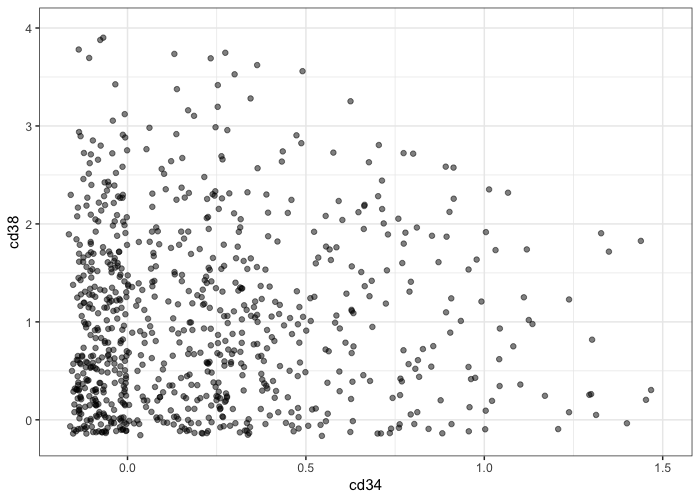
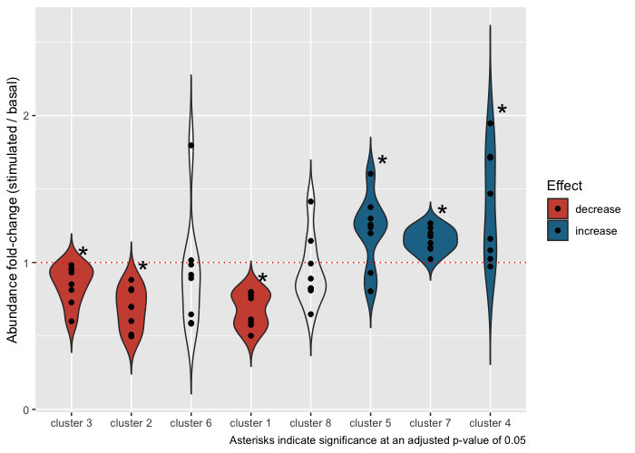

- tidytof: An ecosystem for tidy and highly-reproducible CyTOF data analysis
The goal of tidytof is to provide an integrated suite of R functions for CyTOF data analysis with an intuitive and internally consistent set of design principles. As an extension of the tidyverse ecosystem of data manipulation tools in R, tidytof is both performant and easy-to-use for scientists with a wide range of coding experience (including beginners).
Installation
You can install the development version of tidytof from GitHub with the following command:
if(!require(devtools)) install.packages("devtools")
devtools::install_github("keyes-timothy/tidytof")Once tidytof is installed, you can attach it to your current R session using the following code:
In addition, we can load the other packages we need for this vignette:
Usage
Broadly speaking, tidytof’s functionality is organized to support 3 levels of analysis inherent in single-cell data:
- Reading, writing, preprocessing, and visualizing data at the level of single cells
- Identifying and describing cell subpopulations or clusters
- Building models (for inference or prediction) at the level of patients or samples
How to use tidytof for each of these levels of CyTOF data analysis is detailed below.
Analyzing data at the single-cell level
Reading data with tof_read_data
tidytof comes bundled with several example mass cytometry datasets. To access the raw .fcs and .csv files containing these data, use the tidytof_example_data function. When called with no arguments, tidytof_example_data will return a character vector naming the datasets contained in tidytof:
tidytof_example_data()
#> [1] "aml" "ddpr" "ddpr_metadata.csv"
#> [4] "mix" "mix2" "phenograph"
#> [7] "phenograph_csv" "scaffold" "statistical_scaffold"
#> [10] "surgery"To obtain the file path for the directory containing each dataset, call tidytof_example_data with one of these dataset names as its argument. For example, to obtain the directory for the phenograph data, we would use the following command:
tidytof_example_data("phenograph")
#> [1] "/Library/Frameworks/R.framework/Versions/4.1/Resources/library/tidytof/extdata/phenograph"Using one of these directories (or any other directory containing CyTOF data on your local machine), we can use tof_read_data to read CyTOF data from raw files. Acceptable formats include .fcs files and .csv files. Importantly, tof_read_data is smart enough to read single .fcs/.csv files or multiple .fcs/.csv files depending on whether its first argument (path) leads to a single file or to a directory of files.
Here, we can use tof_read_data to read in all of the .fcs files in the “phenograph” example dataset bundled into tidytof and store it in the phenograph variable.
phenograph <-
tidytof_example_data("phenograph") %>%
tof_read_data()
phenograph %>%
class()
#> [1] "tof_tbl" "tbl_df" "tbl" "data.frame"Regardless of its input format, tidytof reads data into an extended tibble called a tof_tbl (pronounced “tof tibble”), an S3 class identical to tbl_df, but with one additional attribute (“panel”). tidytof stores this additional attribute in tof_tbls because, in addition to analyzing CyTOF data from individual experiments, CyTOF users often want to compare panels between experiments to find common markers or to compare which metals are associated with particular markers across panels.
A few notes about tof_tbls:
-
tof_tbls contains one cell per row and one CyTOF channel per column (to provide the data in its “tidy” format). -
tof_read_dataadds an additional column to the outputtof_tblencoding the name of the file from which each cell was read (the “file_name” column). - Because
tof_tbls inherit from thetbl_dfclass, all methods available to tibbles are also available totof_tbls. For example, dplyr’s usefulmutatemethod can be applied to ourtof_tblnamedphenographabove to convert the columns encoding the phenograph cluster ID and stimulation condition to which each cell belongs into character vectors (instead of their original numeric codes in the uncleaned dataset).
phenograph <-
phenograph %>%
# mutate the input tof_tbl
mutate(
PhenoGraph = as.character(PhenoGraph),
Condition = as.character(Condition)
)
phenograph %>%
# use dplyr's select method to show that the columns have been changed
select(where(is.character)) %>%
head()
#> # A tibble: 6 × 3
#> file_name PhenoGraph Condition
#> <chr> <chr> <chr>
#> 1 H1_PhenoGraph_cluster1 7 7
#> 2 H1_PhenoGraph_cluster1 6 6
#> 3 H1_PhenoGraph_cluster1 9 9
#> 4 H1_PhenoGraph_cluster1 2 2
#> 5 H1_PhenoGraph_cluster1 15 15
#> 6 H1_PhenoGraph_cluster1 12 12The tof_tbl class is preserved even after these transformations.
phenograph %>%
class()
#> [1] "tof_tbl" "tbl_df" "tbl" "data.frame"Finally, to retrieve panel information from a tof_tbl, use tof_get_panel:
phenograph %>%
tof_get_panel() %>%
head()
#> # A tibble: 6 × 2
#> metals antigens
#> <chr> <chr>
#> 1 Time Time
#> 2 Cell_length Cell_length
#> 3 Ir191 DNA1
#> 4 Ir193 DNA2
#> 5 Pd104 BC1
#> 6 Pd106 BC2Importantly, tof_read_data uses an opinionated heuristic to mine different keyword slots of the input .fcs file(s) and guess which metals and antigens were used during data collection. Thus, when .csv files are being read using tof_read_data, it is recommended to use the panel_info argument to provide the panel manually (as .csv files, unlike .fcs files, do not provide built-in metadata about the columns they contain).
Pre-processing with tof_preprocess
Generally, the raw ion counts for each analyte measured on a mass cytometer need to be transformed before CyTOF data analysis. Common preprocessing steps may include variance-stabilizing transformations - such as the hyperbolic arcsine (arcsinh) transformation or a log transformation - scaling/centering, and/or denoising.
To perform standard preprocessing tasks with tidytof, use tof_preprocess. tof_preprocess’s default behavior is to apply the arcsinh transformation (with a cofactor of 5) to each numeric column in the input tof_tibble as well as to remove the gaussian noise that Fluidigm software adds to each ion count (this noise is added for visualization purposes, but for most analyses, removing it is recommended).
As an example, we can preprocess our phenograph tof_tibble above and see how our first few measurements change before and after.
# before preprocessing
phenograph %>%
select(`CD45|Sm154`, `CD34|Nd148`, `CD38|Er167`) %>%
head()
#> # A tibble: 6 × 3
#> `CD45|Sm154` `CD34|Nd148` `CD38|Er167`
#> <dbl> <dbl> <dbl>
#> 1 440. 0.256 18.7
#> 2 705. 1.96 41.2
#> 3 383. -0.302 6.51
#> 4 44.4 2.74 27.2
#> 5 892. 4.08 24.5
#> 6 448. 2.69 11.1
# perform preprocessing
phenograph <-
phenograph %>%
tof_preprocess()
# inspect new values
phenograph %>%
select(`CD45|Sm154`, `CD34|Nd148`, `CD38|Er167`) %>%
head()
#> # A tibble: 6 × 3
#> `CD45|Sm154` `CD34|Nd148` `CD38|Er167`
#> <dbl> <dbl> <dbl>
#> 1 5.17 0.199 2.05
#> 2 5.64 0.390 2.82
#> 3 5.03 0 1.14
#> 4 2.89 0.569 2.42
#> 5 5.88 0.881 2.31
#> 6 5.19 0.569 1.61To alter tof_preprocess’s default behavior, change the channel_cols argument (to specify which columns of tof_tibble should be transformed) and the transform_fun argument (to specify which vector-valued function should be used to transform each of the channel_cols). To keep the gaussian noise added by Fluidigm software (or if you are working with a dataset that does not have this noise), set the undo_noise argument to FALSE.
Finally, note that the built-in function tof_postprocess works nearly identically tof_preprocess, but provides different default behavior (namely, applying the reverse arcsinh transformation with a cofactor of 5 to all numeric columns. See ?tof_postprocess for details).
Downsampling with tof_downsample
Often, CyTOF experiments collect tens or hundreds or millions of cells in total, and it can be useful to downsample to a smaller, more computationally tractable number of cells - either for a final analysis or while developing code. To do this, tidytof implements the tof_downsample verb, which allows downsampling using 3 methods.
Using tidytof’s built-in dataset phenograph_data (which is a smaller version of the dataset we read in ourselves above), we can see that the original size of the dataset is 2000 cells per cluster, or 6000 cells in total:
phenograph_data %>%
count(phenograph_cluster)
#> # A tibble: 3 × 2
#> phenograph_cluster n
#> <chr> <int>
#> 1 cluster1 2000
#> 2 cluster2 2000
#> 3 cluster3 2000To randomly sample 200 cells per cluster, we can use tof_downsample using the “constant” method:
phenograph_data %>%
# downsample
tof_downsample(
method = "constant",
group_cols = phenograph_cluster,
num_cells = 200
) %>%
# count the number of downsampled cells in each cluster
count(phenograph_cluster)
#> # A tibble: 3 × 2
#> phenograph_cluster n
#> <chr> <int>
#> 1 cluster1 200
#> 2 cluster2 200
#> 3 cluster3 200Alternatively, if we wanted to sample 50% of the cells in each cluster, we could use the “prop” method:
phenograph_data %>%
# downsample
tof_downsample(
method = "prop",
group_cols = phenograph_cluster,
prop_cells = 0.5
) %>%
# count the number of downsampled cells in each cluster
count(phenograph_cluster)
#> # A tibble: 3 × 2
#> phenograph_cluster n
#> <chr> <int>
#> 1 cluster1 1000
#> 2 cluster2 1000
#> 3 cluster3 1000And finally, you might also be interested in taking a slightly different approach to downsampling that downsamples the number of cells not to a fixed constant or proportion, but to a fixed density in phenotypic space. For example, the following scatterplot demonstrates that there are certain areas of phenotypic density in phenograph_data that contain more cells than others along the cd34/cd38 axes:
phenograph_data %>%
# preprocess all numeric columns in the dataset
tof_preprocess(undo_noise = FALSE) %>%
# make a scatterplot
ggplot(aes(x = cd34, y = cd38)) +
geom_point(alpha = 0.5) +
scale_x_continuous(limits = c(NA, 1.5)) +
scale_y_continuous(limits = c(NA, 4))To reduce the number of cells in our dataset until the local density around each cell in our dataset is relatively constant, we can use the “density” method of tof_downsample:
phenograph_data %>%
tof_preprocess(undo_noise = FALSE) %>%
tof_downsample(method = "density", density_cols = c(cd34, cd38)) %>%
ggplot(aes(x = cd34, y = cd38)) +
geom_point(alpha = 0.5) +
scale_x_continuous(limits = c(NA, 1.5)) +
scale_y_continuous(limits = c(NA, 4))
For more details, check out the documentation for the 3 underlying members of the tof_downsample_* function family (which are wrapped by tof_downsample):
tof_downsample_constanttof_downsample_proptof_downsample_density
Writing data with tof_write_data
Finally, users may wish to store single-cell data as .fcs or .csv files after transformation, concatenation, filtering, or other data processing steps such as dimensionality reduction and/or clustering (see below). To write single-cell data from a tof_tbl into .fcs or .csv files, use tof_write_data.
# when copying and pasting this code, feel free to change this path
# to wherever you'd like to save your output files
my_path <- file.path("~", "Desktop", "tidytof_vignette_files")
phenograph_data %>%
tof_write_data(
group_cols = phenograph_cluster,
out_path = my_path,
format = "fcs"
)tof_write_data’s trickiest argument is group_cols, the argument used to specify which columns in tof_tibble should be used to group cells (i.e. the rows of tof_tibble) into separate .fcs or .csv files. Simply put, this argument allows tof_write_data to create a single .fcs or .csv file for each unique combination of values in the columns specified by the user. In the example above, cells are grouped into 3 output .fcs files - one for each of the 3 clusters encoded by the phenograph_cluster column in phenograph_data. These files should have the following names (derived from the values in the phenograph_cluster column):
- cluster1.fcs
- cluster2.fcs
- cluster3.fcs
However, suppose we wanted to write multiple files for each cluster by breaking cells into two groups: those that express high levels of pstat5. We can use dplyr::mutate to create a new column in phenograph_data that breaks cells into high- and low-pstat5 expression groups, then add this column to our group_cols specification:
phenograph_data %>%
# create a variable representing if a cell is above or below the median
# expression level of pstat5
mutate(expression_group = if_else(pstat5 > median(pstat5), "high", "low")) %>%
tof_write_data(
group_cols = c(phenograph_cluster, expression_group),
out_path = my_path,
format = "fcs"
)This will write 6 files with the following names (derived from the values in phenograph_cluster and expression_group).
- cluster1_low.fcs
- cluster1_high.fcs
- cluster2_low.fcs
- cluster2_high.fcs
- cluster3_low.fcs
- cluster3_high.fcs
A useful feature of tof_write_data is that it will automatically concatenate cells into single .fcs or .csv files based on the specified group_cols regardless of how many unique files those cells came from, allowing for easy concatenation of .fcs or .csv files containing data from a single sample acquired over multiple CyTOF runs.
Analyzing data at the cluster-level
Identifying clusters with tof_cluster
Once input files are read into a tabular format and preprocessed/downsampled, we might be interested in clustering our data to define communities of cells with shared characteristics.
To do so, we can use the tof_cluster verb. Several clustering methods are implemented in tidytof, including FlowSOM, PhenoGraph, k-means, and others.
To demonstrate, we can apply the FlowSOM clustering algorithm to our phenograph_data from above. Note that phenograph_data contains 6000 total cells (2000 each from 3 clusters identified in the original PhenoGraph publication).
phenograph_clusters <-
phenograph_data %>%
tof_preprocess() %>%
tof_cluster(method = "flowsom", cluster_cols = contains("cd"))
phenograph_clusters %>%
select(sample_name, .flowsom_metacluster, everything()) %>%
head()
#> # A tibble: 6 × 27
#> sample_name .flowsom_metaclu… phenograph_clus… cd19 cd11b cd34 cd45 cd123
#> <chr> <chr> <chr> <dbl> <dbl> <dbl> <dbl> <dbl>
#> 1 H1_PhenoGrap… 1 cluster1 0.199 2.19 0 4.56 0.569
#> 2 H1_PhenoGrap… 1 cluster1 0 2.92 0 5.33 1.61
#> 3 H1_PhenoGrap… 1 cluster1 0 1.99 0.390 4.62 0
#> 4 H1_PhenoGrap… 1 cluster1 0.881 1.53 0.199 4.61 1.02
#> 5 H1_PhenoGrap… 1 cluster1 0.881 2.05 0.199 4.80 0.733
#> 6 H1_PhenoGrap… 1 cluster1 0 1.25 0.733 5.01 0.733
#> # … with 19 more variables: cd33 <dbl>, cd47 <dbl>, cd7 <dbl>, cd15 <dbl>,
#> # cd44 <dbl>, cd38 <dbl>, cd3 <dbl>, cd117 <dbl>, cd64 <dbl>, cd41 <dbl>,
#> # pstat3 <dbl>, pstat5 <dbl>, pampk <dbl>, p4ebp1 <dbl>, ps6 <dbl>,
#> # pcreb <dbl>, pzap70-syk <dbl>, prb <dbl>, perk1-2 <dbl>The output of tof_cluster is a tof_tbl identical to the input tibble, now with the addition of an additional column (“.flowsom_metacluster”) that encodes the cluster id for each cell in the input tof_tbl. Note that all output columns added to a tibble or tof_tbl by tidytof begin with a full-stop (“.”) to reduce the likelihood of collisions with existing column names.
Because the output of tof_cluster is a tof_tbl, we can use dplyr’s count method to assess the accuracy of the FlowSOM clustering compared to the original clustering from the PhenoGraph paper.
phenograph_clusters %>%
count(phenograph_cluster, .flowsom_metacluster, sort = TRUE)
#> # A tibble: 6 × 3
#> phenograph_cluster .flowsom_metacluster n
#> <chr> <chr> <int>
#> 1 cluster2 3 1993
#> 2 cluster3 2 1993
#> 3 cluster1 1 1981
#> 4 cluster1 2 19
#> 5 cluster2 2 7
#> 6 cluster3 1 7Here, we can see that the FlowSOM algorithm groups most cells from the same PhenoGraph cluster with one another (with a small number of mistakes per PhenoGraph cluster).
To change which clustering algorithm tof_cluster uses, alter the method flag; to change the columns used to compute the clusters, change the cluster_cols flag. And finally, if you want to return a tibble that only includes the cluster labels (not the cluster labels added as a new column to the input tof_tbl), set add_col to FALSE.
# will result in a tibble with only 1 column (the cluster labels)
phenograph_data %>%
tof_preprocess() %>%
tof_cluster(method = "flowsom", cluster_cols = contains("cd"), add_col = FALSE) %>%
head()
#> # A tibble: 6 × 1
#> .flowsom_metacluster
#> <chr>
#> 1 2
#> 2 2
#> 3 2
#> 4 2
#> 5 2
#> 6 2Dimensionality reduction with tof_reduce
After clusters are identified, a useful tool for visualizing them is dimensionality reduction, a form of unsupervised machine learning used to represent high-dimensional datasets in a smaller, easier-to-visualize number of dimensions.
tidytof includes several algorithms commonly used by biologists for dimensionality reduction: Principal component analysis (PCA), t-distributed stochastic neighbor embedding (tSNE), and uniform manifold approximation and projection (UMAP). To apply these to a dataset, use tof_reduce_dimensions:
# perform the dimensionality reduction
phenograph_tsne <-
phenograph_clusters %>%
tof_reduce_dimensions(method = "tsne")
# select only the tsne embedding columns using a tidyselect helper (contains)
phenograph_tsne %>%
select(contains("tsne")) %>%
head()
#> # A tibble: 6 × 2
#> .tsne_1 .tsne_2
#> <dbl> <dbl>
#> 1 -14.9 6.17
#> 2 -13.0 13.4
#> 3 -21.4 -5.21
#> 4 -9.81 5.05
#> 5 -16.4 2.55
#> 6 -16.1 3.25By default, tof_reduce_dimensions will add reduced-dimension feature embeddings to the input tof_tbl and return the augmented tof_tbl (that is, a tof_tbl with new columns for each embedding dimension) as its result. To return only the features embeddings themselves, set add_cols to FALSE (as in tof_cluster).
Regardless of the method used, reduced-dimension feature embeddings can be visualized using ggplot2 (or any graphics package):
# plot the tsne embeddings using color to distinguish between clusters
phenograph_tsne %>%
ggplot(aes(x = .tsne_1, y = .tsne_2, fill = phenograph_cluster)) +
geom_point(shape = 21) +
theme_bw() +
labs(fill = NULL)
# plot the tsne embeddings using color to represent CD11b expression
phenograph_tsne %>%
ggplot(aes(x = .tsne_1, y = .tsne_2, fill = cd11b)) +
geom_point(shape = 21) +
scale_fill_viridis_c() +
theme_bw() +
labs(fill = "CD11b expression")
Such visualizations can be helpful in qualitatively describing the phenotypic differences between the clusters in a dataset. For example, in the example above, we can see that one of the clusters has high CD11b expression, whereas the others have lower CD11b expression.
Differential discovery analysis with tof_daa and tof_dea
While dimensionality reduction can be used to visualize a clustering result, many CyTOF users also want to use statistical tools to rigorously quantify which clusters(s) in their dataset associate with a particular experimental or clinical variable.
Such analyses are often grouped under the umbrella term differential discovery analysis and include both comparing the relative size of clusters between experimental conditions (differential abundance analysis; DAA) as well as comparing marker expression patterns of clusters between experimental conditions (differential expression analysis; DEA). tidytof provides the tof_daa and tof_dea verbs for differential abundance and differential expression analyses, respectively.
To demonstrate how to use these verbs, we’ll first download a dataset originally collected for the development of the CITRUS algorithm. These data are available in the HDCytoData package, which is available on Bioconductor and can be downloaded with the following command:
if (!requireNamespace("BiocManager", quietly = TRUE))
install.packages("BiocManager")
BiocManager::install("HDCytoData")To load the CITRUS data into our current R session, we can call a function from the HDCytoData, which will provide it to us in a format from the {flowCore} package (called a “flowSet”). To convert this into a tidy tibble, we can use tidytof built-in method for converting flowCore objects into tof_tbl’s .
citrus_raw <- HDCytoData::Bodenmiller_BCR_XL_flowSet()
citrus_data <-
citrus_raw %>%
as_tof_tbl(sep = "_")Thus, we can see that citrus_data is a tof_tbl with 172791 cells (one in each row) and 39 pieces of information about each cell (one in each column).
We can also extract some metadata from the raw data and join it with our single-cell data using some functions from the tidyverse:
citrus_metadata <-
tibble(
file_name = as.character(flowCore::pData(citrus_raw)[[1]]),
sample_id = 1:length(file_name),
patient = str_extract(file_name, "patient[:digit:]"),
stimulation = str_extract(file_name, "(BCR-XL)|Reference")
) %>%
mutate(
stimulation = if_else(stimulation == "Reference", "Basal", stimulation)
)
citrus_metadata %>%
head()
#> # A tibble: 6 × 4
#> file_name sample_id patient stimulation
#> <chr> <int> <chr> <chr>
#> 1 PBMC8_30min_patient1_BCR-XL.fcs 1 patient1 BCR-XL
#> 2 PBMC8_30min_patient1_Reference.fcs 2 patient1 Basal
#> 3 PBMC8_30min_patient2_BCR-XL.fcs 3 patient2 BCR-XL
#> 4 PBMC8_30min_patient2_Reference.fcs 4 patient2 Basal
#> 5 PBMC8_30min_patient3_BCR-XL.fcs 5 patient3 BCR-XL
#> 6 PBMC8_30min_patient3_Reference.fcs 6 patient3 BasalThus, we now have sample-level information about which patient each sample was collected from and which stimulation condition (“Basal” or “BCR-XL”) each sample was exposed to before data acquisition.
Finally, we can join this metadata with our single-cell tof_tbl to obtain the cleaned dataset.
citrus_data <-
citrus_data %>%
left_join(citrus_metadata, by = "sample_id")After these data cleaning steps, we now have citrus_data, a tof_tbl containing cells collected from 8 patients. Specifically, 2 samples were taken from each patient: one in which the cells’ B-cell receptors were stimulated (BCR-XL) and one in which they were not (Basal). In citrus_data, each cell’s patient of origin is stored in the patient column, and each cell’s stimulation condition is stored in the stimulation column. In addition, the population_id column stores information about cluster labels that were applied to each cell using a combination of FlowSOM clustering and manual merging (for details, run ?HDCytoData::Bodenmiller_BCR_XL in the R console).
We might wonder if there are certain clusters that expand or deplete within patients between the two stimulation conditions described above - this is a question that requires differential abundance analysis (DAA). tidytof’s tof_daa verb supports the use of 3 statistical approaches for performing DAA: diffcyt, generalized-linear mixed modeling (GLMMs), and simple t-tests. Because the setup described above uses a paired design and only has 2 experimental conditions of interest (Basal vs. BCR-XL), we can use the paired t-test method:
daa_result <-
citrus_data %>%
tof_daa(
daa_method = "ttest",
cluster_col = population_id,
effect_col = stimulation,
group_cols = patient,
test_type = "paired"
)
daa_result
#> # A tibble: 8 × 8
#> population_id p_val p_adj significant t df mean_diff mean_fc
#> <chr> <dbl> <dbl> <chr> <dbl> <dbl> <dbl> <dbl>
#> 1 1 0.000924 0.00535 "*" -5.48 7 -0.00743 0.644
#> 2 2 0.00623 0.0166 "*" -3.86 7 -0.0156 0.674
#> 3 3 0.0235 0.0314 "*" -2.88 7 -0.0638 0.849
#> 4 4 0.0235 0.0314 "*" 2.88 7 0.0832 1.38
#> 5 5 0.0116 0.0232 "*" 3.39 7 0.00246 1.08
#> 6 6 0.371 0.371 "" -0.955 7 -0.0168 0.919
#> 7 7 0.00134 0.00535 "*" 5.14 7 0.0202 1.14
#> 8 8 0.236 0.270 "" -1.30 7 -0.00228 0.901Based on this output, we can see that 6 of our 8 clusters have statistically different abundance in our two stimulation conditions. Using tidytof easy integration with tidyverse packages, we can use this result to visualize the fold-changes of each cluster (within each patient) in the BCR-XL condition compared to the Basal condition using ggplot2:
plot_data <-
citrus_data %>%
mutate(population_id = as.character(population_id)) %>%
left_join(
select(daa_result, population_id, significant, mean_fc),
by = "population_id"
) %>%
dplyr::count(patient, stimulation, population_id, significant, mean_fc, name = "n") %>%
group_by(patient, stimulation) %>%
mutate(prop = n / sum(n)) %>%
ungroup() %>%
pivot_wider(
names_from = stimulation,
values_from = c(prop, n),
) %>%
mutate(
diff = `prop_BCR-XL` - prop_Basal,
fc = `prop_BCR-XL` / prop_Basal,
population_id = fct_reorder(population_id, diff),
direction =
case_when(
mean_fc > 1 & significant == "*" ~ "increase",
mean_fc < 1 & significant == "*" ~ "decrease",
TRUE ~ NA_character_
)
)
significance_data <-
plot_data %>%
group_by(population_id, significant, direction) %>%
summarize(diff = max(diff), fc = max(fc)) %>%
ungroup()
plot_data %>%
ggplot(aes(x = population_id, y = fc, fill = direction)) +
geom_violin(trim = FALSE) +
geom_hline(yintercept = 1, color = "red", linetype = "dotted", size = 0.5) +
geom_point() +
geom_text(
aes(x = population_id, y = fc, label = significant),
data = significance_data,
size = 8,
nudge_x = 0.2,
nudge_y = 0.06
) +
scale_x_discrete(labels = function(x) str_c("cluster ", x)) +
scale_fill_manual(
values = c("decrease" = "#cd5241", "increase" = "#207394"),
na.translate = FALSE
) +
labs(
x = NULL,
y = "Abundance fold-change (stimulated / basal)",
fill = "Effect",
caption = "Asterisks indicate significance at an adjusted p-value of 0.05"
)
Importantly, the output of tof_daa depends slightly on the underlying statistical method being used, and details can be found in the documentation for each tof_daa_* function family member:
tof_daa_diffcyttof_daa_glmmtof_daa_ttest
Similarly, suppose we’re interested in how intracellular signaling proteins change their expression levels between our two stimulation conditions in each of our clusters. This is a Differential Expression Analysis (DEA) and can be performed using tidytof’s tof_dea verb. As above, we can use paired t-tests with multiple-hypothesis correction to to test for significant differences in each cluster’s expression of our signaling markers between stimulation conditions.
signaling_markers <-
c(
"pNFkB_Nd142", "pStat5_Nd150", "pAkt_Sm152", "pStat1_Eu153", "pStat3_Gd158",
"pSlp76_Dy164", "pBtk_Er166", "pErk_Er168", "pS6_Yb172", "pZap70_Gd156"
)
dea_result <-
citrus_data %>%
tof_preprocess(channel_cols = any_of(signaling_markers)) %>%
tof_dea(
dea_method = "ttest",
cluster_col = population_id,
marker_cols = any_of(signaling_markers),
effect_col = stimulation,
group_cols = patient,
test_type = "paired"
)
dea_result %>%
head()
#> # A tibble: 6 × 9
#> population_id marker p_val p_adj significant t df mean_diff mean_fc
#> <chr> <chr> <dbl> <dbl> <chr> <dbl> <dbl> <dbl> <dbl>
#> 1 1 pS6_Y… 7.98e-8 2.36e-6 * 22.8 7 2.50 3.95
#> 2 2 pS6_Y… 1.12e-7 2.36e-6 * 21.7 7 2.09 2.41
#> 3 3 pBtk_… 1.47e-7 2.36e-6 * -20.8 7 -0.459 0.383
#> 4 7 pBtk_… 1.28e-7 2.36e-6 * -21.3 7 -0.500 0.374
#> 5 8 pBtk_… 1.10e-7 2.36e-6 * -21.7 7 -0.500 0.403
#> 6 4 pBtk_… 8.24e-7 1.10e-5 * -16.2 7 -0.447 0.392While the output of tof_dea also depends on the underlying test being used, we can see that the result above looks relatively similar to the output from tof_daa. Above, the output is a tibble in which each row represents the differential expression results from a single cluster-marker pair - for example, the first row represents the difference in expression of pS6 in cluster 1 between the BCR-XL and Basal conditions. Each row includes the raw p-value and multiple-hypothesis-corrected p-value for each cluster-marker pair.
This result can be used to make a volcano plot to visualize the results for all cluster-marker pairs:
volcano_data <-
dea_result %>%
mutate(
log2_fc = log(mean_fc, base = 2),
log_p = -log(p_adj),
significance =
case_when(
p_adj < 0.05 & mean_fc > 1 ~ "increased",
p_adj < 0.05 & mean_fc < 1 ~ "decreased",
TRUE ~ NA_character_
),
marker =
str_extract(marker, ".+_") %>%
str_remove("_"),
pair = str_c(marker, str_c("cluster ", population_id), sep = "@")
)
volcano_data %>%
ggplot(aes(x = log2_fc, y = log_p, fill = significance)) +
geom_vline(xintercept = 0, linetype = "dashed", color = "gray50") +
geom_hline(yintercept = -log(0.05), linetype = "dashed", color = "red") +
geom_point(shape = 21, size = 2) +
ggrepel::geom_text_repel(
aes(label = pair),
data = slice_head(volcano_data, n = 10L),
size = 2
) +
scale_fill_manual(
values = c("decreased" = "#cd5241", "increased" = "#207394"),
na.value = "#cdcdcd"
) +
labs(
x = "log2(Fold-change)",
y = "-log10(p-value)",
fill = NULL,
caption = "Labels indicate the 10 most significant marker-cluster pairs"
)
Analyzing data at the patient- and sample-level
Feature extraction with tof_extract_features
In addition to its functions for analyzing and visualizing CyTOF data at the single-cell and cluster levels, tidytof’s tof_extract_features verb allows users to aggregate single-cell and cluster-level information in order to summarize whole-samples (or whole-patients) from which cells were collected. These features can be useful for visualizing the differences between patients and samples in different experimental conditions or for building machine learning models.
To understand how the tof_extract_features verb works, it’s easiest to look at each of its subroutines (the members of the tof_extract_* function family) independently.
First, we have tof_extract_proportion, which extracts the proportion of cells in each cluster within each sample (with samples defined using the group_cols argument):
# preprocess the numeric columns in the citrus dataset
citrus_data <-
citrus_data %>%
mutate(cluster = str_c("cluster", population_id)) %>%
tof_preprocess()
citrus_data %>%
tof_extract_proportion(
cluster_col = cluster,
group_cols = c(patient, stimulation)
) %>%
head()
#> # A tibble: 6 × 10
#> patient stimulation `prop@cluster1` `prop@cluster2` `prop@cluster3`
#> <chr> <chr> <dbl> <dbl> <dbl>
#> 1 patient1 Basal 0.0190 0.0482 0.447
#> 2 patient1 BCR-XL 0.0109 0.0395 0.268
#> 3 patient2 Basal 0.0130 0.0280 0.491
#> 4 patient2 BCR-XL 0.0101 0.0143 0.358
#> 5 patient3 Basal 0.0326 0.0830 0.397
#> 6 patient3 BCR-XL 0.0200 0.0412 0.323
#> # … with 5 more variables: prop@cluster4 <dbl>, prop@cluster5 <dbl>,
#> # prop@cluster6 <dbl>, prop@cluster7 <dbl>, prop@cluster8 <dbl>Like all members of the tof_extract_* function family, tof_extract_proportion returns one row for each sample (defined as a unique combination of values of the group_cols) and one column for each extracted feature (above, one column for the proportion of each of the 8 clusters in citrus_data). These values can also be returned in “long” format by changing the format argument:
citrus_data %>%
tof_extract_proportion(
cluster_col = cluster,
group_cols = c(patient, stimulation),
format = "long"
) %>%
head()
#> # A tibble: 6 × 4
#> patient stimulation cluster prop
#> <chr> <chr> <chr> <dbl>
#> 1 patient1 Basal cluster1 0.0190
#> 2 patient1 Basal cluster2 0.0482
#> 3 patient1 Basal cluster3 0.447
#> 4 patient1 Basal cluster4 0.237
#> 5 patient1 Basal cluster5 0.00219
#> 6 patient1 Basal cluster6 0.0759Another member of the same function family, tof_extract_central_tendency, computes the central tendency (e.g. mean or median) of user-specified markers in each cluster.
citrus_data %>%
tof_extract_central_tendency(
cluster_col = cluster,
group_cols = c(patient, stimulation),
marker_cols = any_of(c("CD45_In115", "CD4_Nd145", "CD20_Sm147")),
central_tendency_function = mean
) %>%
head()
#> # A tibble: 6 × 26
#> patient stimulation `CD45_In115@cluste… `CD4_Nd145@cluste… `CD20_Sm147@clust…
#> <chr> <chr> <dbl> <dbl> <dbl>
#> 1 patient1 Basal 4.68 0.834 3.72
#> 2 patient1 BCR-XL 4.80 0.186 4.11
#> 3 patient2 Basal 4.89 0.879 3.55
#> 4 patient2 BCR-XL 5.00 0.0379 3.91
#> 5 patient3 Basal 4.98 0.818 3.60
#> 6 patient3 BCR-XL 5.04 0.0516 3.92
#> # … with 21 more variables: CD45_In115@cluster2_ct <dbl>,
#> # CD4_Nd145@cluster2_ct <dbl>, CD20_Sm147@cluster2_ct <dbl>,
#> # CD45_In115@cluster3_ct <dbl>, CD4_Nd145@cluster3_ct <dbl>,
#> # CD20_Sm147@cluster3_ct <dbl>, CD45_In115@cluster4_ct <dbl>,
#> # CD4_Nd145@cluster4_ct <dbl>, CD20_Sm147@cluster4_ct <dbl>,
#> # CD45_In115@cluster5_ct <dbl>, CD4_Nd145@cluster5_ct <dbl>,
#> # CD20_Sm147@cluster5_ct <dbl>, CD45_In115@cluster6_ct <dbl>, …tof_extract_threshold is similar to tof_extract_central_tendency, but calculates the proportion of cells above a user-specified expression value for each marker instead of a measure of central tendency:
citrus_data %>%
tof_extract_threshold(
cluster_col = cluster,
group_cols = c(patient, stimulation),
marker_cols = any_of(c("CD45_In115", "CD4_Nd145", "CD20_Sm147")),
threshold = 5
) %>%
head()
#> # A tibble: 6 × 26
#> patient stimulation `CD45_In115@cluste… `CD4_Nd145@cluste… `CD20_Sm147@clust…
#> <chr> <chr> <dbl> <dbl> <dbl>
#> 1 patient1 Basal 0.365 0 0.0769
#> 2 patient1 BCR-XL 0.516 0 0.0968
#> 3 patient2 Basal 0.452 0 0.0323
#> 4 patient2 BCR-XL 0.554 0 0.101
#> 5 patient3 Basal 0.549 0 0.0552
#> 6 patient3 BCR-XL 0.547 0 0.0816
#> # … with 21 more variables: CD45_In115@cluster2_threshold <dbl>,
#> # CD4_Nd145@cluster2_threshold <dbl>, CD20_Sm147@cluster2_threshold <dbl>,
#> # CD45_In115@cluster3_threshold <dbl>, CD4_Nd145@cluster3_threshold <dbl>,
#> # CD20_Sm147@cluster3_threshold <dbl>, CD45_In115@cluster4_threshold <dbl>,
#> # CD4_Nd145@cluster4_threshold <dbl>, CD20_Sm147@cluster4_threshold <dbl>,
#> # CD45_In115@cluster5_threshold <dbl>, CD4_Nd145@cluster5_threshold <dbl>,
#> # CD20_Sm147@cluster5_threshold <dbl>, CD45_In115@cluster6_threshold <dbl>, …The two final members of the tof_extract_* function family – tof_extract_emd and tof_extract_jsd are designed specifically for comparing distributions of marker expression between stimulation conditions. As such, they must be given a stimulation_col that identifies which stimulation condition each cell is in, and a basal_level that specifies the reference (i.e. unstimulated) condition within the stimulation_col. With these additional arguments, tof_extract_emd computes the Earth-mover’s distance between each marker’s distribution in the stimulation conditions (within each cluster) and the basal condition; similarly, tof_extract_jsd computes the Jensen-Shannon divergence index between the same distributions. Both of these values are ways to compare how different 2 distributions are to one another and are more computationally expensive (but also higher-resolution) than simply comparing measures of central tendency.
# Earth-mover's distance
citrus_data %>%
tof_extract_emd(
cluster_col = cluster,
group_cols = patient,
marker_cols = any_of(c("CD45_In115", "CD4_Nd145", "CD20_Sm147")),
stimulation_col = stimulation,
basal_level = "Basal"
) %>%
head()
#> # A tibble: 6 × 25
#> patient `BCR-XL_CD45_In1… `BCR-XL_CD4_Nd14… `BCR-XL_CD20_Sm… `BCR-XL_CD45_In…
#> <chr> <dbl> <dbl> <dbl> <dbl>
#> 1 patient1 0.870 2.48 12.5 1.45
#> 2 patient2 1.11 7.02 10.9 0.730
#> 3 patient3 0.756 6.19 10.5 0.639
#> 4 patient4 2.64 6.78 9.47 3.27
#> 5 patient5 0.593 7.49 7.70 0.781
#> 6 patient6 0.656 4.74 8.72 1.57
#> # … with 20 more variables: BCR-XL_CD4_Nd145@cluster7_emd <dbl>,
#> # BCR-XL_CD20_Sm147@cluster7_emd <dbl>, BCR-XL_CD45_In115@cluster4_emd <dbl>,
#> # BCR-XL_CD4_Nd145@cluster4_emd <dbl>, BCR-XL_CD20_Sm147@cluster4_emd <dbl>,
#> # BCR-XL_CD45_In115@cluster2_emd <dbl>, BCR-XL_CD4_Nd145@cluster2_emd <dbl>,
#> # BCR-XL_CD20_Sm147@cluster2_emd <dbl>, BCR-XL_CD45_In115@cluster6_emd <dbl>,
#> # BCR-XL_CD4_Nd145@cluster6_emd <dbl>, BCR-XL_CD20_Sm147@cluster6_emd <dbl>,
#> # BCR-XL_CD45_In115@cluster8_emd <dbl>, …
# Jensen-Shannon Divergence
citrus_data %>%
tof_extract_jsd(
cluster_col = cluster,
group_cols = patient,
marker_cols = any_of(c("CD45_In115", "CD4_Nd145", "CD20_Sm147")),
stimulation_col = stimulation,
basal_level = "Basal"
) %>%
head()
#> # A tibble: 6 × 25
#> patient `BCR-XL_CD45_In1… `BCR-XL_CD4_Nd14… `BCR-XL_CD20_Sm… `BCR-XL_CD45_In…
#> <chr> <dbl> <dbl> <dbl> <dbl>
#> 1 patient1 0.0331 0.0479 0.348 0.0580
#> 2 patient2 0.00805 0.168 0.402 0.0159
#> 3 patient3 0.0114 0.113 0.358 0.0205
#> 4 patient4 0.0303 0.136 0.205 0.0390
#> 5 patient5 0.00908 0.0782 0.283 0.0261
#> 6 patient6 0.00919 0.0341 0.222 0.0450
#> # … with 20 more variables: BCR-XL_CD4_Nd145@cluster7_jsd <dbl>,
#> # BCR-XL_CD20_Sm147@cluster7_jsd <dbl>, BCR-XL_CD45_In115@cluster4_jsd <dbl>,
#> # BCR-XL_CD4_Nd145@cluster4_jsd <dbl>, BCR-XL_CD20_Sm147@cluster4_jsd <dbl>,
#> # BCR-XL_CD45_In115@cluster2_jsd <dbl>, BCR-XL_CD4_Nd145@cluster2_jsd <dbl>,
#> # BCR-XL_CD20_Sm147@cluster2_jsd <dbl>, BCR-XL_CD45_In115@cluster6_jsd <dbl>,
#> # BCR-XL_CD4_Nd145@cluster6_jsd <dbl>, BCR-XL_CD20_Sm147@cluster6_jsd <dbl>,
#> # BCR-XL_CD45_In115@cluster8_jsd <dbl>, …Finally, the tof_extract_features verb provides a wrapper to each of the members of its function family, allowing users to extract multiple features types at once. For example, the following code extracts the proportion of each cluster, median of several markers in each cluster, and EMD between the basal condition and stimulated condition in each cluster for all patients in citrus_data.
citrus_data %>%
tof_extract_features(
cluster_col = cluster,
group_cols = patient,
stimulation_col = stimulation,
lineage_cols = any_of(c("CD45_In115", "CD20_Sm147", "CD33_Nd148")),
signaling_cols = any_of(signaling_markers),
signaling_method = "emd",
basal_level = "Basal"
) %>%
head()Outcomes modeling with tof_model
[Under construction]
[intro to building predictive models and why we might be motivated to do so.]
tidytof implements several functions for building predictive models using sample- or patient-level data. To illustrate how they work, first we download some patient-level data from this paper and combining it with sample-level clinical annotations in one of tidytof’s built-in data objects (ddpr_metadata).
# link for downloading the sample-level data from the Nature Medicine website
data_link <-
"https://static-content.springer.com/esm/art%3A10.1038%2Fnm.4505/MediaObjects/41591_2018_BFnm4505_MOESM3_ESM.csv"
# downloading the data and combining it with clinical annotations
ddpr_patients <-
readr::read_csv(data_link, skip = 2L, n_max = 78L, show_col_types = FALSE) %>%
dplyr::rename(patient_id = Patient_ID) %>%
left_join(ddpr_metadata, by = "patient_id") %>%
dplyr::filter(!str_detect(patient_id, "Healthy"))
ddpr_patients %>%
select(where(~ !is.numeric(.x))) %>%
head()
#> # A tibble: 6 × 8
#> patient_id gender mrd_risk nci_rome_risk relapse_status type_of_relapse cohort
#> <chr> <chr> <chr> <chr> <chr> <chr> <chr>
#> 1 UPN1 Male Interme… Standard Yes Early Train…
#> 2 UPN1-Rx Male Interme… Standard Yes Early Train…
#> 3 UPN2 Male Interme… Standard No <NA> Train…
#> 4 UPN3 Female Standard Standard No <NA> Train…
#> 5 UPN4 Male Standard Standard No <NA> Valid…
#> 6 UPN5 Female Standard High No <NA> Valid…
#> # … with 1 more variable: ddpr_risk <chr>The data processing steps above result in the ddpr_patients tibble. The numeric columns in ddpr_patients represent aggregated cell population features for each sample (see Supplementary Table 5 in this paper for details). The non-numeric columns represent clinical metadata about each sample (run ?ddpr_metadata for more information).
Building a classifier using logistic regression
# k-fold
ddpr_patients %>%
select(any_of(colnames(ddpr_metadata)), patient_id, contains("Pop2")) %>%
tof_split_data(
split_method = "k-fold",
num_cv_folds = 3,
strata = relapse_status
)
# bootstrapping
ddpr_patients %>%
select(any_of(colnames(ddpr_metadata)), patient_id, contains("Pop2")) %>%
tof_split_data(
split_method = "bootstrap",
num_bootstraps = 3,
strata = relapse_status
)
# simple with prop
ddpr_patients %>%
select(any_of(colnames(ddpr_metadata)), patient_id, contains("Pop2")) %>%
tof_split_data(
split_method = "simple",
simple_prop = 0.75,
strata = relapse_status
)
# simple with specification
splits <-
ddpr_patients %>%
select(any_of(colnames(ddpr_metadata)), patient_id, contains("Pop2")) %>%
filter(!is.na(cohort)) %>%
mutate(splits = (cohort == "Training")) %>%
pull(splits)
ddpr_patients %>%
select(any_of(colnames(ddpr_metadata)), patient_id, contains("Pop2")) %>%
filter(!is.na(cohort)) %>%
tof_split_data(
split_method = splits,
num_cv_folds = 3,
strata = relapse_status
)
# using split_col
ddpr_patients %>%
select(any_of(colnames(ddpr_metadata)), patient_id, contains("Pop2")) %>%
drop_na(cohort) %>%
mutate(splits = (cohort == "Training")) %>%
tof_split_data(
split_method = "simple",
split_col = splits,
simple_prop = 0.75,
strata = relapse_status
)
# hyperparameter grid
tof_create_grid()
#> # A tibble: 25 × 2
#> penalty mixture
#> <dbl> <dbl>
#> 1 0.0000000001 0
#> 2 0.0000000001 0.25
#> 3 0.0000000001 0.5
#> 4 0.0000000001 0.75
#> 5 0.0000000001 1
#> 6 0.0000000316 0
#> 7 0.0000000316 0.25
#> 8 0.0000000316 0.5
#> 9 0.0000000316 0.75
#> 10 0.0000000316 1
#> # … with 15 more rows
# create recipe
ddpr_patients %>%
tof_create_recipe(predictor_cols = contains("Pop2"))
#> Recipe
#>
#> Inputs:
#>
#> role #variables
#> predictor 115
#>
#> Operations:
#>
#> Terms selected ~dplyr::any_of(outcome_colnames), ~dplyr::any_of(predictor_colnames)
#> Dummy variables from recipes::all_nominal_predictors()
#> K-nearest neighbor imputation for recipes::all_numeric_predictors()
#> Centering and scaling for recipes::all_numeric_predictors()
# train classifier
ddpr_patients %>%
mutate(relapse_status = as.factor(relapse_status)) %>%
mutate(event = 1) %>%
tof_train_model(
predictor_cols = contains("Pop2"),
#response_col = relapse_status,
time_col = age_at_diagnosis,
event_col = event,
model_type = "two-class",
split_method = "simple"
)
{tidytof}’s Design Principles (and some tips)
{tidytof} was been designed by a multidisciplinary team of wet-lab biologists, bioinformaticians, and physician-scientists who analyze CyTOF and other kinds of single-cell data to solve a variety of problems. As a result, tidytof’s high-level API was designed with great care to mirror that of the tidyverse itself - that is, to be human-centered, consistent, composable, and inclusive for a wide userbase.
In this section, we describe some miscellaneous design decisions and tips for using tidytof that may help the enthusiastic user.
1. Use the tof_ prefix to your advantage.
You may notice that most tidytof functions begin with the prefix tof_. This is intentional, as it will allow you to use your development environment’s code-completing software to search for functions easily (even if you don’t remember the function name). For this reason, we recommend using tidytof within the RStudio development environment; however, many code editors have predictive text functionality that serves a similar function.
In general, tidytof verbs are organized in such a way that your IDE’s code-completion tools should allow you to search for (and compare) related functions with relative ease. (For instance, the tof_cluster_ prefix is used for all clustering functions, and the tof_downsample_ is used for all downsampling functions).
2. {tidytof} functions use 2 kinds of arguments
tidytof functions are optimized for working with “tidy” data in the form of tibbles or data.frames. This means that most tidytof functions share some basic design principles in terms of how their arguments work. The most important of these principles is illustrated by the following picture:
[some picture]
tof_extract_features(
tof_tibble = ___,
cluster_col = ___,
group_cols = ___,
stimulation_col = ___,
lineage_cols = ___,
signaling_cols = ___,
central_tendency_function = ___,
signaling_method = ___,
basal_level = ___,
)[Under construction]
3. Additional resources
tidytof is built on top of the tidyverse family of R packages. As a result, most users of tidytof will benefit substantially from spending a few hours with the dplyr, ggplot2, and tidyr package vignettes to learn about some of the many useful functions these packages provide.
To access our recommended list of package vignettes, run the following lines of R code in the console:
# dplyr
vignette(topic = "dplyr", package = "dplyr")
vignette(topic = "grouping", package = "dplyr")
vignette(topic = "colwise", package = "dplyr")
# ggplot2
vignette(topic = "ggplot2-specs", package = "ggplot2")
# tidyr
vignette(topic = "tidy-data", package = "tidyr")
vignette(topic = "nest", package = "tidyr")